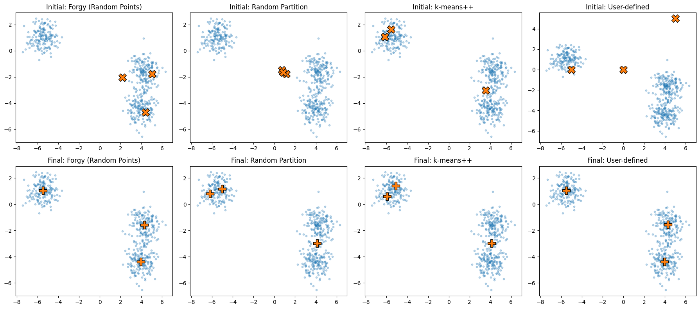

Generating Centroid Positions for K-Means Algorithm
K-Means algorithm needs to choose initial centroid positions before clustering begins, there are several methods for generating these initial positions, and choice can significantly affect final result because k-means can get stuck in local minima
random initialization (forgy method) — classic k-means
this is simplest method
randomly select k data points from dataset
use them directly as initial centroids
this is fast but sometimes gives poor starting points
random partition initialization
randomly assign each data point to one of k clusters
compute centroids as mean of each cluster
this tends to produce centroids near center of data cloud but can be less stable
k-means++ initialization (default in scikit-learn)
this is modern and widely used method because it improves convergence and reduces chance of bad clustering
process
choose 1st centroid randomly from data
calculate distance between all points and this centroid
choose 2nd centroid position using a weighted probability distribution where a point is chosen with probability proportional to distribution of squared distances
compute distance² from each point to nearest already chosen centroid
select next centroid with probability proportional to distance²
repeat above process to generate all centroids
intuition
1st centroid is random
next centroids are chosen far apart
this spreads centroids in a way that reduces poor initializations
result
much faster convergence
better clustering performance
more stable results across runs
user-defined initialization
you can manually supply initial centroids
kmeans = KMeans(n_clusters=k, init=your_centroid_array)
useful when you know something about structure of data
import numpy as np
import matplotlib.pyplot as plt
from sklearn.datasets import make_blobs
from sklearn.cluster import KMeans
# =====================================================
# 1. Generate fabricated data
# =====================================================
X, y = make_blobs(
n_samples=500, centers=3,
cluster_std=0.7, random_state=123
)
k = 3
# =====================================================
# 2. Initialization Methods
# =====================================================
# --- (A) Random Initialization (Forgy) ---
def init_forgy(X, k):
idx = np.random.choice(len(X), k, replace=False)
return X[idx]
# --- (B) Random Partition Initialization ---
def init_random_partition(X, k):
labels = np.random.randint(0, k, size=len(X))
return np.array([X[labels == i].mean(axis=0) for i in range(k)])
# --- (C) k-means++ Initialization ---
def init_kmeans_plus_plus(X, k):
n_samples, _ = X.shape
centroids = []
# First centroid
first_idx = np.random.randint(n_samples)
centroids.append(X[first_idx])
# Remaining centroids
for _ in range(1, k):
dist_sq = np.min(
np.array([np.sum((X - c) ** 2, axis=1) for c in centroids]),
axis=0,
)
prob = dist_sq / dist_sq.sum()
next_idx = np.random.choice(n_samples, p=prob)
centroids.append(X[next_idx])
return np.array(centroids)
# --- (D) User-defined Initialization ---
user_defined_centroids = np.array([
[0, 0],
[5, 5],
[-5, 0]
])
# =====================================================
# 3. Compute Initial Centroids
# =====================================================
init_methods = {
"Forgy (Random Points)": init_forgy(X, k),
"Random Partition": init_random_partition(X, k),
"k-means++": init_kmeans_plus_plus(X, k),
"User-defined": user_defined_centroids,
}
# =====================================================
# 4. Run K-means for each initialization method
# =====================================================
final_centroids = {}
for name, init_c in init_methods.items():
kmeans = KMeans(
n_clusters=k,
init=init_c,
n_init=1, # MUST be 1 when using manual initialization
random_state=0
)
kmeans.fit(X)
final_centroids[name] = kmeans.cluster_centers_
# =====================================================
# 5. Plot 2×4 subplots
# =====================================================
fig, axs = plt.subplots(2, 4, figsize=(18, 8))
titles = list(init_methods.keys())
# --- Row 1: Initial centroids ---
for i, title in enumerate(titles):
ax = axs[0, i]
ax.scatter(X[:, 0], X[:, 1], s=10, alpha=0.3)
ax.scatter(init_methods[title][:, 0], init_methods[title][:, 1],
s=200, marker='X', edgecolor='black')
ax.set_title(f"Initial: {title}")
# --- Row 2: Final centroids after k-means ---
for i, title in enumerate(titles):
ax = axs[1, i]
ax.scatter(X[:, 0], X[:, 1], s=10, alpha=0.3)
ax.scatter(final_centroids[title][:, 0], final_centroids[title][:, 1],
s=200, marker='P', edgecolor='black')
ax.set_title(f"Final: {title}")
plt.tight_layout()
plt.show()

Method |
How centroids are created |
Notes |
|---|---|---|
Random (Forgy) |
Pick k random data points |
Fast but may give poor starting points |
Random Partition |
Random cluster assignment → compute means |
Rarely used, more variable |
k-means++ |
First centroid random; others chosen with distance² probability |
Best balance of speed/stability; default in sklearn |
Manual |
User provides k initial centroids |
For domain-specific setups |